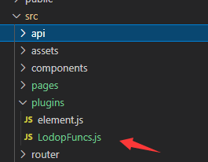
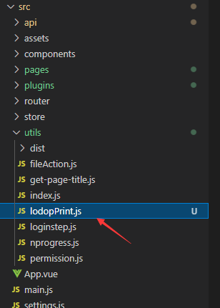

vue中使用lodop
vue中使用Lodop，参考http://www.c-lodop.com/faq/pp35.html
vue中如何使用Lodop打印，其他客户的经验，参考
：https://www.yuque.com/docs/share/bdd26152-e1ef-4ed3-b536-8234fcb4df68
vue中如何使用lodop（常见问答原文）
1 把官方提供的LodopFuncs.js文件保存到某个目录下，
如myProject\src\assets\LodopFuncs.js。
2 修改LodopFuncs.js文件, 在文件最底部添加一行代码
export { getLodop }; //导出getLodop
把该文件中的getLodop函数 export 出来。
3 在打印事件处理函数所在文件里 import 该 module
在打印事件函数中调用getLodop获取LODOP对象变量，
按照官方教程书写自己的打印函数，通过 PRINT、PREVIEW、PRINT_DESIGN进行输出。
如下代码所示 myProject\src\components\Print.vue
<template>
<div class="Print">
<button class="print-btn" v-on:click="btnClickPrint">
<span>{{msg}}</span>
</button>
</div>
</template>
<script>
import { getLodop } from '../assets/LodopFuncs' //导入模块
export default {
name: 'Print',
data () {
return {
msg: '点击按钮打印'
}
},
methods: {
btnClickPrint: function () {
let LODOP = getLodop()//调用getLodop获取LODOP对象
LODOP.PRINT_INIT("")
LODOP.ADD_PRINT_TEXT(50, 231, 260, 39, "打印内容")
LODOP.PREVIEW()
}
}
}
</script>
vue中使用lodop（客户经验原文）
一、复制LodopFuncs.js到vue项目里
比如复制到src/plugins文件夹下

二、修改LodopFuncs.js文件, 在文件最底部添加一行代码
//导出getLodop export { getLodop }
方法1、vue组件里直接引用
<template>
<div class="Print">
<el-button type="primary" @click="btnClickPrint">{{msg}}</el-button>
</div>
</template>
<script>
import { getLodop } from '@/plugins/LodopFuncs.js' //导入模块
export default {
data() {
return {
msg: '点击按钮打印'
}
},
methods: {
// 打印逻辑
btnClickPrint() {
let LODOP = getLodop()//调用getLodop获取LODOP对象
LODOP.PRINT_INIT("")
LODOP.ADD_PRINT_TEXT(50, 231, 260, 39, "打印内容")
LODOP.PREVIEW()
}
}
}
</script>

vue组件里去调用封装函数
<template>
<div class="Print">
<el-button type="primary" @click="btnClickPrint">{{msg}}</el-button>
</div>
</template>
<script>
import { printAftersalePartsOne } from '@/utils/lodopPrint.js'
export default {
data() {
return {
msg: '点击按钮打印'
},
val:{
address:'地址信息XXXX',
partinfo:'物品信息XXXXX'
}
},
methods: {
// 打印逻辑
btnClickPrint() {
printAftersalePartsOne(this.val)
}
}
}
</script>
附：lodopPrint.js文件
import { getLodop } from '@/plugins/LodopFuncs.js' //导入lodop getLodop函数模块
import dayjs from "dayjs" //日期格式化插件
//引入store
import store from '@/store/index.js'
const nowtime = dayjs().format('YYYY-MM-DD HH:mm:ss')
const user = store.state.common.user.name
/**
* 售后管理
*/
// 售后配件登记打印模版
export function printAftersalePartsOne(p) {
LODOP = getLodop();
LODOP.PRINT_INITA("0mm", "0mm", "100.01mm", "70.01mm", "诚迅办公系统售后配件登记打印作业");
LODOP.SET_PRINT_PAGESIZE(1, 1000, 700, "CreateCustomPage");
LODOP.ADD_PRINT_TEXT("3.94mm", "3.97mm", "24.92mm", "5.77mm", "收货信息");
LODOP.SET_PRINT_STYLEA(0, "FontSize", 12);
LODOP.SET_PRINT_STYLEA(0, "Bold", 1);
LODOP.ADD_PRINT_TEXT("9.53mm", "3.97mm", "43.66mm", "26.46mm", p.address);
LODOP.SET_PRINT_STYLEA(0, "FontSize", 10);
LODOP.ADD_PRINT_RECT(5, 5, 360, 247, 2, 1);
LODOP.SET_PRINT_STYLEA(0, "Horient", 2);
LODOP.SET_PRINT_STYLEA(0, "Vorient", 2);
LODOP.ADD_PRINT_TEXT("4.23mm", "53.45mm", "18.52mm", "5.29mm", "物品");
LODOP.SET_PRINT_STYLEA(0, "FontSize", 12);
LODOP.SET_PRINT_STYLEA(0, "Bold", 1);
LODOP.ADD_PRINT_TEXT("9.53mm", "53.45mm", "39.69mm", "23.81mm", p.partinfo);
LODOP.SET_PRINT_STYLEA(0, "FontSize", 10);
LODOP.ADD_PRINT_LINE(149, "50.01mm", "2.33mm", 190, 2, 1);
LODOP.SET_PRINT_STYLEA(0, "Horient", 2);
LODOP.ADD_PRINT_LINE(149, 9, 150, 369, 2, 1);
LODOP.ADD_PRINT_LINE("58.74mm", "2.38mm", "59.03mm", "97.68mm", 2, 1);
LODOP.ADD_PRINT_TEXT("40.98mm", "3.97mm", "19.63mm", "7.09mm", "备注");
LODOP.SET_PRINT_STYLEA(0, "FontSize", 12);
LODOP.SET_PRINT_STYLEA(0, "Bold", 1);
LODOP.ADD_PRINT_TEXT("61.91mm", "3.97mm", "89.96mm", "3.97mm", `打印人：${user}， 打印时间：${nowtime}`);
// LODOP.PRINT_DESIGN();
LODOP.PREVIEW()
}